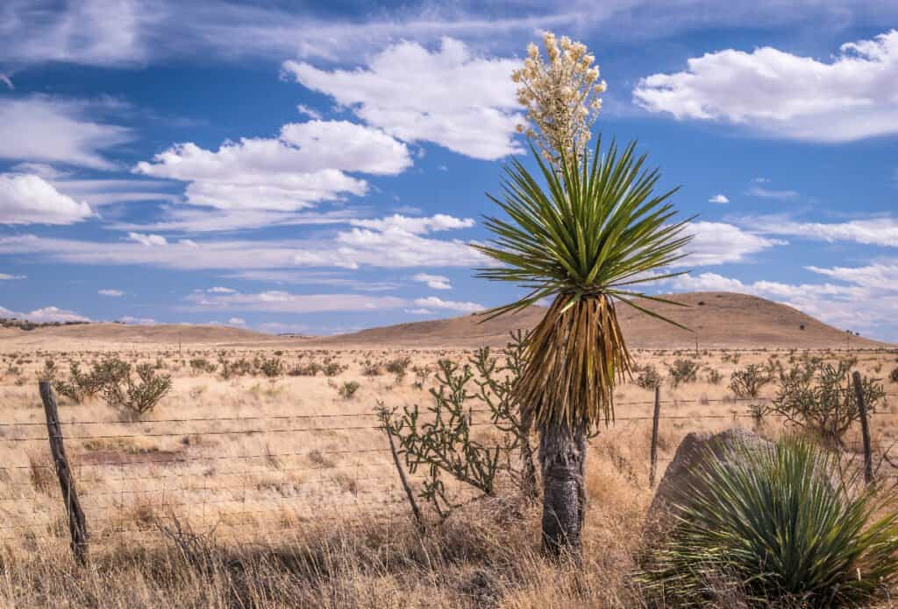
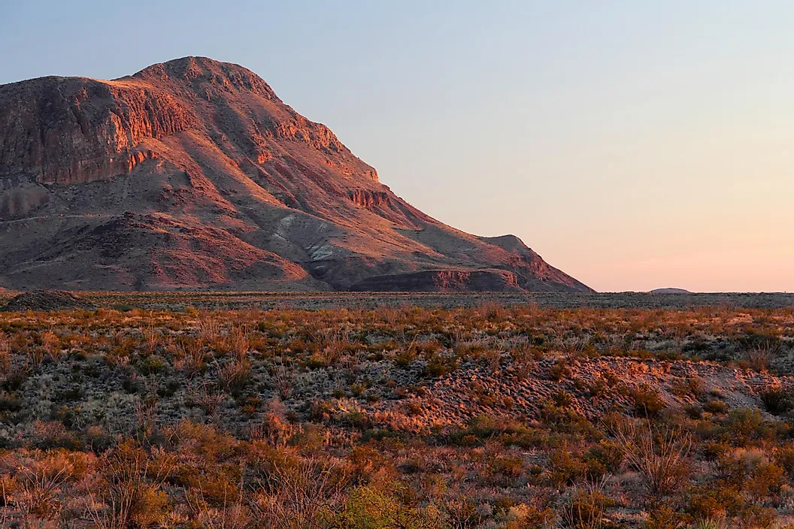
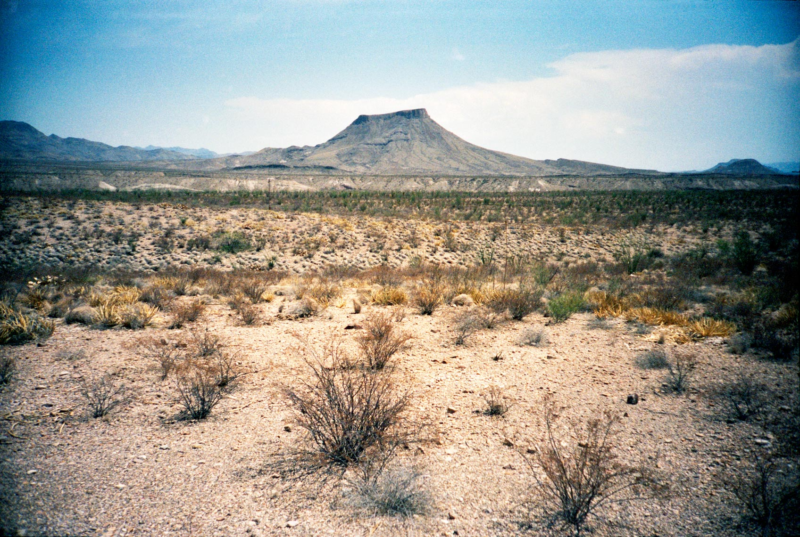
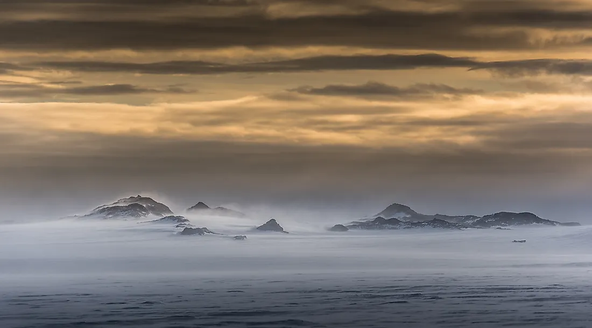
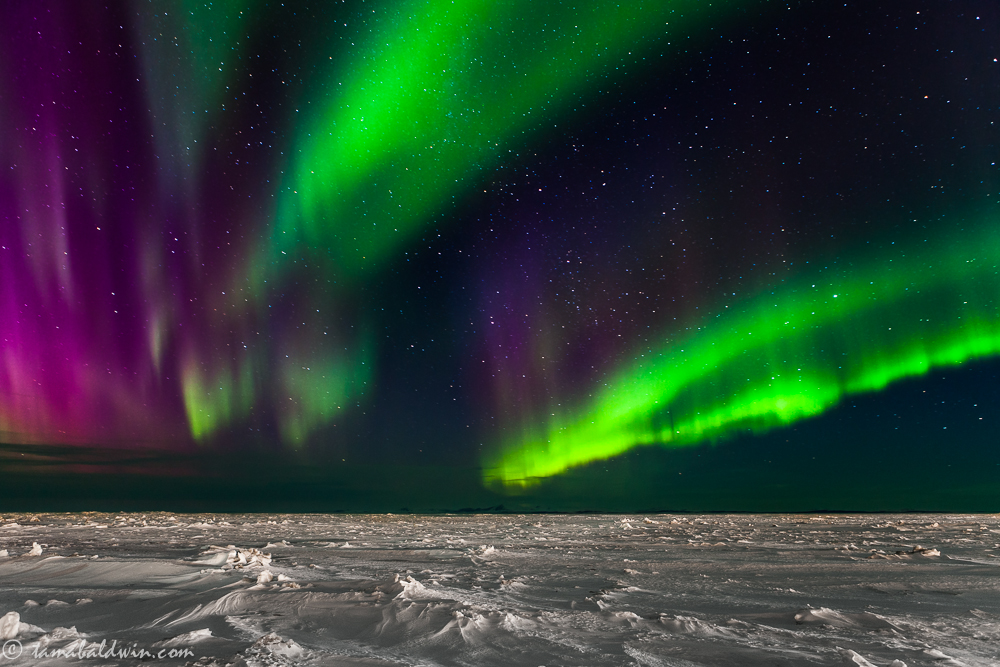
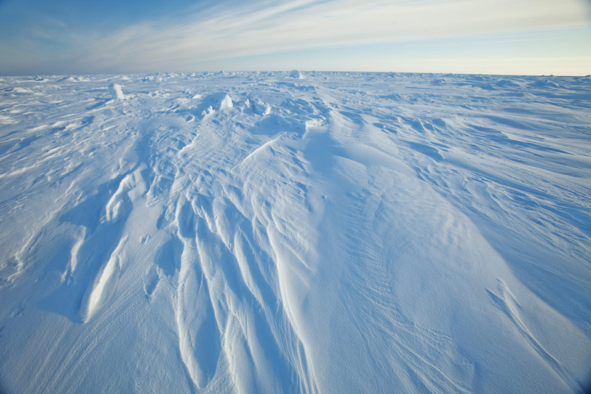

El desierto de Gobi (en mongol, Говь; en chino, 戈壁; pinyin, gē bì) es una gran región desértica
situada entre el norte de China y el sur de Mongolia. Se puede considerar
uno de los desiertos, o zonas desérticas, más grandes e importantes del mundo. Lo rodean las
montañas de Altái y las estepas de Mongolia, por el norte; la meseta del Tíbet, por el suroeste; y
la llanura del Norte de China, por el sureste.
El Gobi está compuesto por diferentes regiones geográficas y ecológicas, basadas en sus variaciones
de clima y topografía. El origen climático de este desierto se debe a una gran sombra orográfica.
Ubicacion
Históricamente, el desierto de Gobi destaca por haber sido parte del Imperio mongol
y por la localización de varias ciudades importantes a lo largo de la Ruta de la Seda, ahora
conectadas por carreteras y pistas. Es atravesado por el ferrocarril Transmongoliano, que une Ulán
Bator con Pekín.
Ocupando el 30% del territorio nacional, el gran Gobi de Mongolia abarca
caprichosos montes, dunas arenosas, vastas mesetas, estepas con sus hierbas aromáticas y, desde
luego, un mundo animal muy variado.
Arqueólogos y paleontólogos han hecho excavaciones en la cuenca del Nemegt, en la
parte noroeste del
desierto de Gobi en Mongolia, que es conocida por sus tesoros fósiles, incluyendo mamíferos
prehistóricos, huevos de dinosaurio y utensilios de piedra prehistóricos, de unos 100.000 años de
antigüedad.
Video de Gobi | Fuente: youtube/DrinkTea&Travel
Chihuahua



El desierto de Chihuahua (del inglés: Chihuahuan Desert) es el desierto más extenso
de América del Norte, con un área de 450 000 km², aunque algunos investigadores consideran inclusive
un área de 520 000 km², lo que hace que sea el 36 % del total de área desértica del continente. Se
encuentra a ambos lados de la frontera de los Estados Unidos y México.
En Estados Unidos ocupa los valles y cuencas del centro del estado de Nuevo México, así como la
región al oeste del río Pecos, en el estado de Texas y el sureste de Arizona; en México es parte de
las Sierras y Llanuras del Norte, cubriendo parte de los estados de Sonora, Chihuahua, Coahuila,
Durango y Zacatecas.
Ubicacion | Fuente: google maps.
De los cuatro grandes desiertos norteamericanos, el desierto de Chihuahua es el que se encuentra más al este y al sur en el continente. Recibe su nombre por ser en el estado de Chihuahua donde se iniciaron los estudios de este ecosistema.
El terreno consiste principalmente de valles separados por varias pequeñas cordilleras, de las cuales destacan el norte de la Sierra Madre Occidental, la Sierra Madre Oriental, la Sierra del Carmen, las montañas Sacramento, las montañas Sandía, las montañas Manzano, las montañas Magdalena-San Mateo, los Montes Chisos, las Montañas Guadalupe, y las montañas Davis. Estos forman islas de microclimas frescos y húmedos dentro del desierto, que llegan a albergar biomas tales como pastizales, bosques caducifolios y bosques de coníferas.
Video de Chihuahua | Fuente: youtube/MG
Ártico



El norte del Ártico se compone de grandes desiertos polares que se extienden por Alaska, Groenlandia, Canadá, Islandia, Noruega, Suecia, Finlandia y Rusia. Las escasas precipitaciones y nevadas se hielan debido a las bajas temperaturas conformando un permanente manto de nieve congelada que cubre el gran casquete polar y las tierras árticas.
Ubicación |Fuente: google maps
El océano en este vasto territorio casi siempre está congelado y se equipara al Desierto del Sahara, por ejemplo, porque recibe aproximadamente la misma cantidad de lluvia anual, muy escasa, casi siempre inferior a los 250 mm anuales. El vocablo ártico proviene del griego y significa oso.
Registra las temperaturas más bajas, con promedios anuales que no superan los 8 ºC. Posee dos estaciones anuales bien diferenciadas: una extensa de clima muy frío y otra más cálida y breve, con temperaturas que no alcanzan los 10 ºC.
Ausencia de precipitaciones, son casi nulas marcando un promedio de 300 mm anuales o menos, que caen en forma de nieve o sólida. La humedad atmosférica también es escasa, por lo que el clima es seco y se registran fuertes ventiscas, acompañados de tormentas de nieve y viento.
Una característica distintiva de los polos terrestres es la prolongada noche polar, que dura entre 98 a 127 días. Pero en el polo Norte se prolonga 6 meses, donde no hay sino la luz que proviene de las estrellas, la luna y la llamada siembra polar, que es muy brillante.
Video del desierto | Fuente: youtube/andyexploresworld